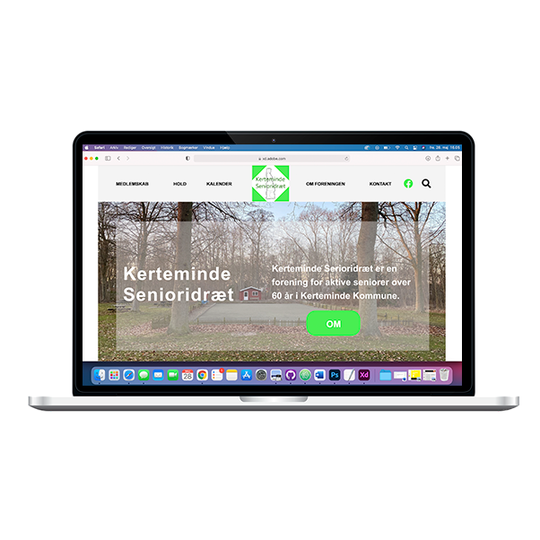
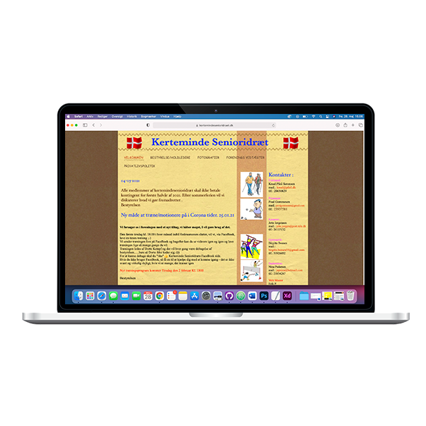
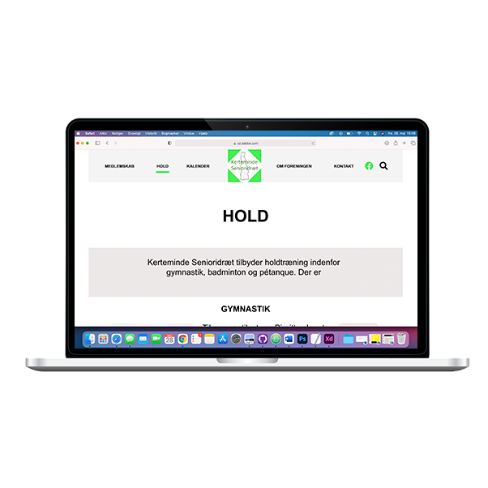

Re-design
www.kertemindesenioridræt.dk
Adobe XD
I vores gruppe havde vi fået til opgave at lave et re-design af en hjemmeside. I gruppen valgte vi www.kertemindesenioridræt.dk.
I denne opgave har jeg stået for udvikling af wireframe og mockup, til forside og hold siden. Det var vigtigt del af opgaven at få rebrandet Kerteminde senioridræt, og få hjemmesiden up to date. Re-designet er nøje lavet ud fra målgruppen. Jeg har stået for brugertest, hvor jeg derefter fik implementeret rettelserne. Til løsning af opgaven har jeg indgået i et team på 3.
Står du og mangler en teamplayer med styr re-design? Så klik på knappen under, og kontakt mig.

